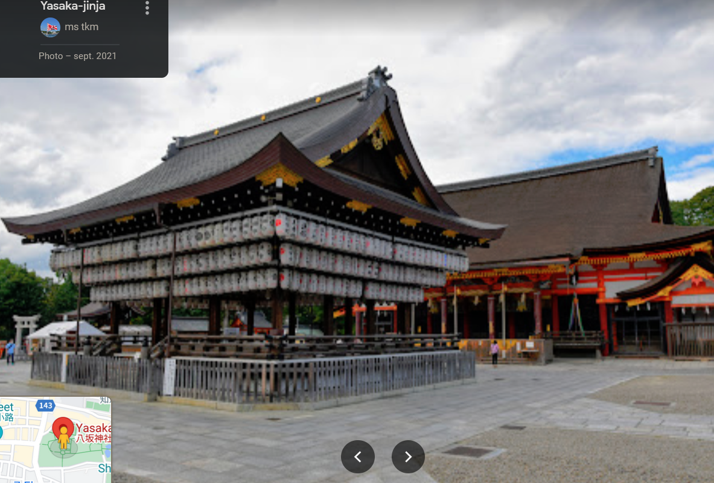
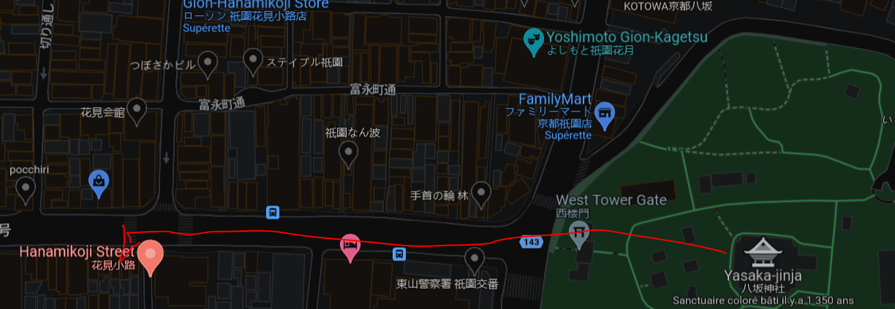
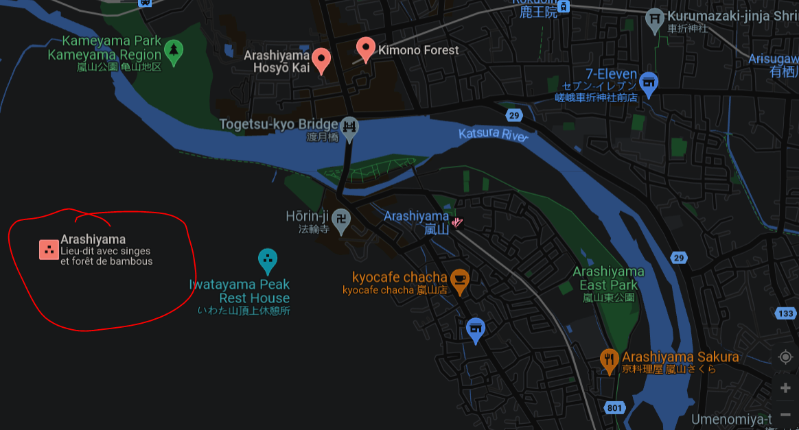
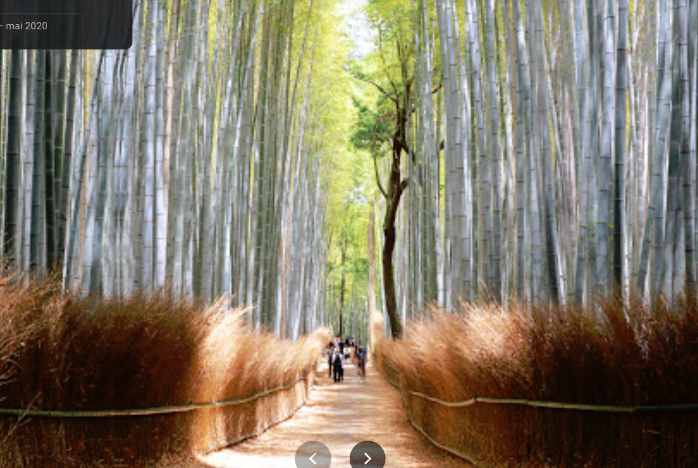
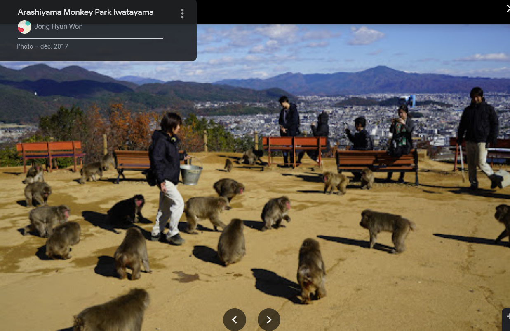
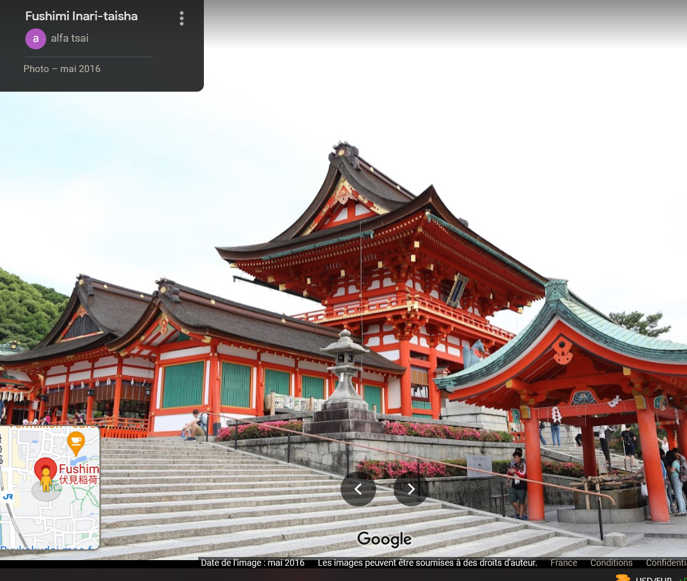
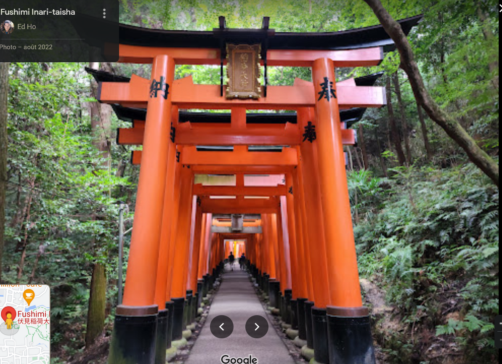

Kyoto
Pagode de yasaka / Hokan-ji (nord est)
Temple boudhiste

Direction nord :
Yasaka-Jinja
à l'ouest :
Quartier Gion - Hanamikoji Street
Rue traditionelle (photo interdite / Geisha )
Arashiyama (nord ouest )
Bamboo grove
parc avec foret de bambou (200m de long )

Juste a coté , parc a singe 600yens
Fushimi Inari-taisha sud est
Joli temple land + aller de 32000 Tori

Bonnes adresses ?
- Ichiran ramen , ramen en solo
- Tips: superette , bento apres 19h => soldé
- Tips: demander un plat OMarii ( plus grosse portion régulierement pas/peu plus chere)